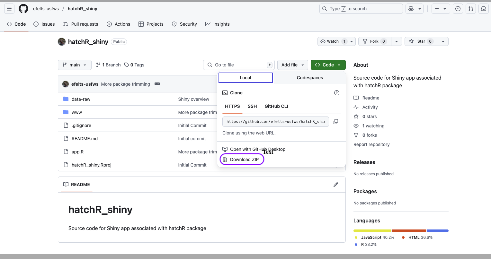
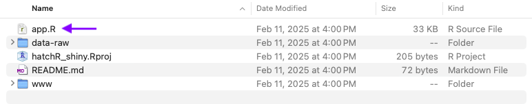
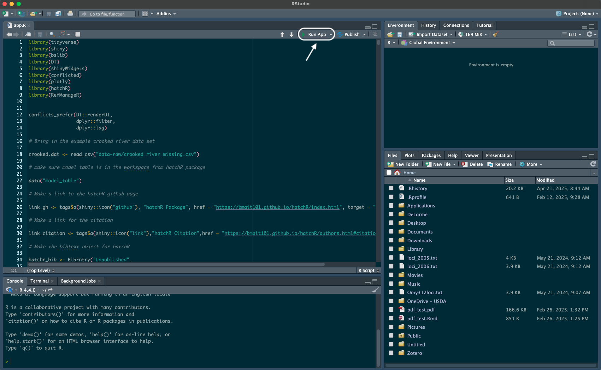

Introduction
The hatchR Shiny app is a powerful tool to interact with the hatchR package without needing to write any code. There are multiple ways to interact with the Shiny app. The first is through the online Shiny server. The second is downloading the Shiny directory with all the Shiny code and launching it locally.
We will walk through both options and discuss their respective pros and cons.
Shiny server
The easiest way to interact with hatchR’s Shiny app is the online Shiny server.
The server can be accessed at:
https://elifelts.shinyapps.io/hatchR_demo/
However, the drawback of using this method is you must have continuous internet access and if many users have used the Shiny app in a given month, the limited wall time (amount of CPU hours available for the app) may be used up. If either of those are issues, you can launch Shiny locally and use the app an unlimited number of times.
Using Shiny locally
To use the Shiny app locally, you will need R (the programming language) and Rstudio (the visual editor used to interact with R, sometimes called and IDE or integrated development environment) downloaded to your computer.
If you have already downloaded those software, jump to the In Rstudio section.
They can be downloaded at the following locations (it’s recommended you download R first).
Rstudio: https://posit.co/downloads/
In Rstudio
Once R and Rstudio are downloaded, the Shiny app can easily be launched. First the Shiny package will need to be installed.
Using Rstudio, in the console or a script you will run:
install.packages("shiny")With internet
Once the Shiny package is installed, you simply run the below either in your script or in the console.
shiny::runGitHub("hatchR_shiny", "efelts-usfws")This will launch the Shiny app in an HTML window of Rstudio. We recommend transferring from the RStudio viewer pane to an internet browser. This can be accomplished by clicking “Open in Browser” from the RStudio HTML window. Now the app will be available for you to use just as you would the online resource, but without the limitations of a limited wall time or continuous internet connection. You can rerun that same line over and over again to relaunch the Shiny app each time.
Note: the app runs using more packages than just
shiny::mentioned in the previous section. The app will automatically install those packages the first time it is used.
Briefly, the command refers to the GitHub website page that hosts the
Shiny app and accesses it using
shiny::runGitHub(repository_name, repository_user_name). So
if either the repository name or host’s user name changed in the GitHub
they could easily be accessed to correctly changing the above script
accordingly. This makes more sense when you visit the Shiny app GitHub
where you can see efelts-usfws hosts a
hatchR_shiny repository (or GitHub directory) https://github.com/efelts-usfws/hatchR_shiny.
Without internet
Importantly, you still need internet to download the Shiny app and
the Shiny package (install.packages("shiny")) for the first
time, but will not need access after they have been downloaded.
The easiest way to install the Shiny app is to navigate to the GitHub page and download a zipped directory for the app.
https://github.com/efelts-usfws/hatchR_shiny
Once at the GitHub page (repository)—shown below—the software can be downloaded by navigating to the green <> Code button. Once clicked a drop down box will appear, in the Local tab at the very bottom will be a Download Zip link (highlighted in purple).

This will then download a zipped directory to your personal computer, wherever online downloads are sent to on your machine. From there you will need to unzip the directory. The unzipped directory can be kept in your downloads folder or moved to a more permanent location in your file management system.
In the unzipped directory, you will navigate to the
app.R file (purple arrow) and open it in Rstudio.

With the app.R file open in Rstudio click the Run
App button (white rounded rectangle and arrow) in your
app.R script tab and it will launch the Shiny app just like
the shiny::runGitHub("hatchR_shiny", "efelts-usfws") did
above. Once the repository is downloaded to your computer you won’t need
an internet connection to use the app again (if accessed this way).
However, if the software is updated in the repository you will need to
redownload the repository for your local Shiny app to reflect the newly
added changes.

Importantly, DO NOT modify the code in the
app.R script in Rstudio.